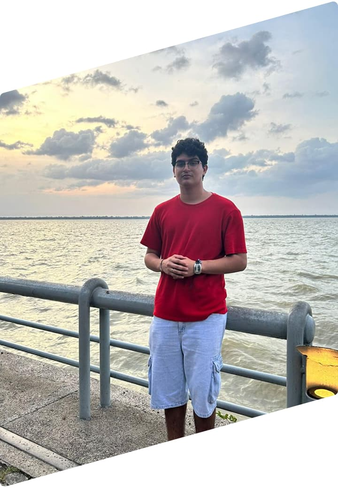

Desenvolvedor
Full-Stack &
UX/UI Designer
Localizado em Rondônia 📍


Localizado em Rondônia 📍
Sou desenvolvedor Full-Stack em TypeScript. Atualmente trabalho com Next.js no Front-End e Prisma com Fastify no Back-End. Tenho projetos pessoais com HTML, CSS e JavaScript, como por exemplo o Bikcraft.
Desenvolvi projetos em TypeScript, incluindo o Back-End e Front-End. Criando CRUDs e pesquisas em SQL. Além ajustes no site da SEDAM com foco em responsividade e UI/UX.
Desenvolvi projetos básicos, incluindo em Back-End e Front-End, auxiliando em pequenos ajustes e correções. Um período de aprendizado realmente.
Minha mais recente experiência acadêmica está sendo o bacharelado em Ciências da computação. Além disso sempre faço cursos e bootcamps para me manter atualizado.